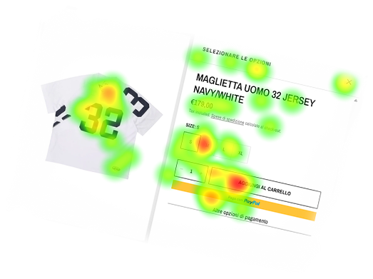
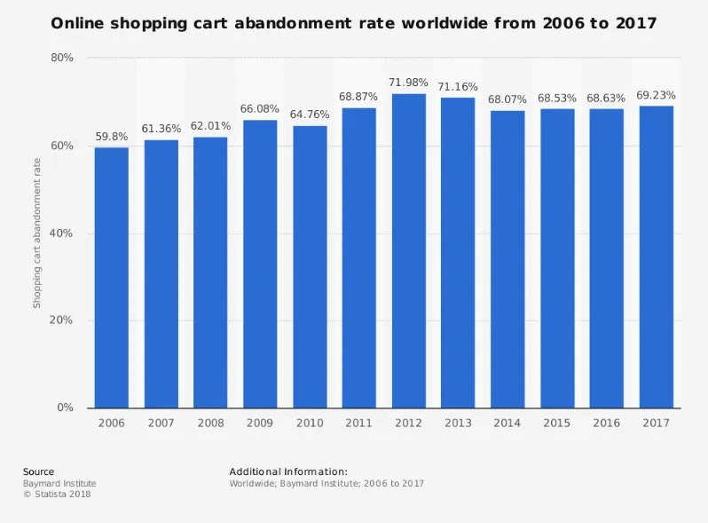

I tuoi strumenti ti dicono Dove accade
200 persone abbandonano il Carrello
Analytics
Individuiamo dove il percorso d’acquisto perde attenzione, chiarezza e fiducia.

Ogni giorno, decine di clienti arrivano, scelgono, riempiono il carrello. Poi spariscono.
Oltre 7 carrelli su 10 vengono abbandonati.
Baymard Institute rileva un tasso medio di abbandono oltre al 70%. Il problema non è solo tecnico: spesso riguarda chiarezza, fiducia, costi percepiti, frizioni di checkout e informazioni non viste.
Ogni carrello abbandonato è un cliente che hai già conquistato con traffico, contenuti e budget, e che stai per perdere in silenzio.

200 persone abbandonano il Carrello
Analytics
Perchè quell’elemento crea attrito cognitivo
Synapses-lab
Uniamo osservazione del comportamento reale (con strumenti come l'eye-tracking) a una lettura neuro-comunicativa dei risultati: non ci fermiamo a mostrare dove guarda l'utente, ma interpretiamo perché lo fa, cosa ignora e cosa gli genera esitazione. Da qui nascono indicazioni concrete su cosa intervenire prima.
Un primo confronto serve a capire se il tuo e-commerce, il tuo target e la tua categoria sono adatti a un’analisi comportamentale. Nessuna promessa automatica: solo una valutazione seria del problema e del possibile percorso.
Richiedi un primo confronto